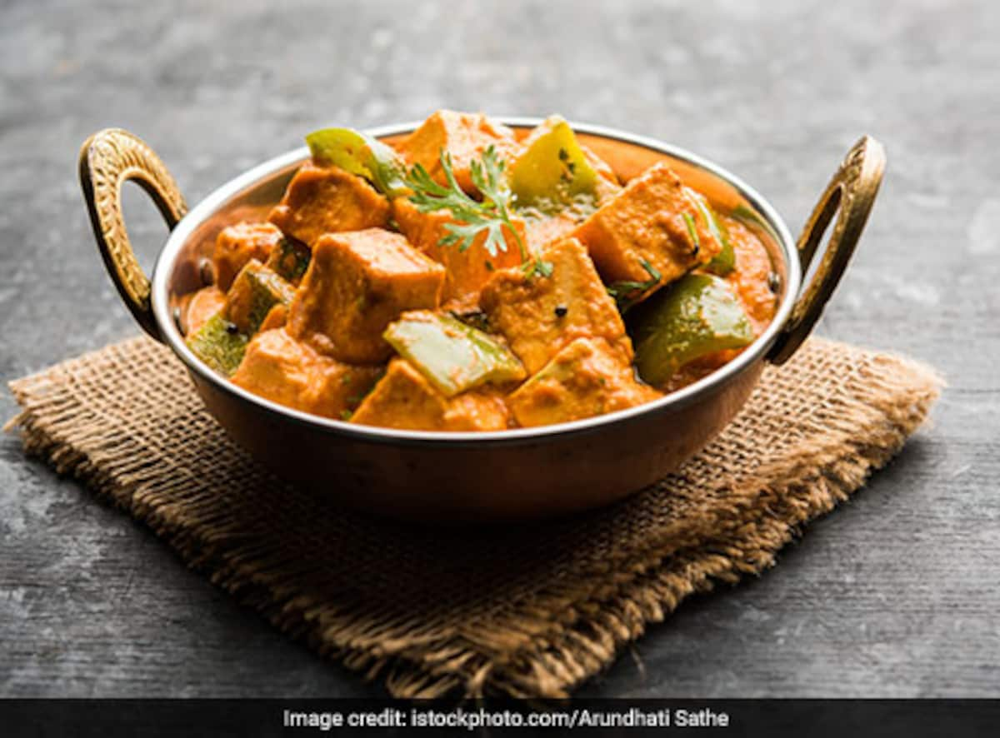

kadhai paneer
Kadai Paneer is a vibrant, tangy, deeply spiced paneer recipe that is perfect for enjoying all year round. Made with Indian pantry staples like onions, tomatoes, capsicum (green bell peppers) and Indian spices, this bright dish comes together in 30 minutes. I share two ways to make this curry – a semi dry restaurant style version and a spicy home style gravy.
The word kadai refers to a humble piece of Indian cookware; a kadai is similar to a Chinese wok, but with steeper sides and more depth. This entire dish is made in the kadai, and thus the dish is named “Kadai Paneer” or “Karahi Paneer”.

Ingredients
Main ingredients
- 250 to 300 grams Paneer (Indian cottage cheese)
- 1 small to medium capsicum (green bell pepper), thinly sliced
- 1.5 inches ginger and 7 to 8 medium sized garlic- crushed in a mortar-pestle to a paste
- 1 to 2 green chilies - chopped
- 2 onions (medium-sized) - 100 grams, finely chopped
- 7 tomatoes (small to medium-sized) - 500 to 550 grams (2 tomatoes, finely chopped and 5 tomatoes, pureed in a blender)
- ¾ to 1 teaspoon Garam Masala
- ½ tablespoon crushed kasuri methi (dried fenugreek leaves)
- ½ to ¾ cup water or add as required
- 2 tablespoons light cream or 1 tablespoon heavy cream - optional
- 4 tablespoons Butter or oil or ghee (clarified butter)
- 1 to 2 tablespoons chopped coriander leaves - for garnish
- salt as required
For kadai masala
- 5 teaspoons coriander seeds
- 4 to 5 kashmiri red chilies - seeds removed - for other variety of dry chilies, reduce to 2 to 4 depending on their heat, pungency
Instructions
Preparation
- First roast the coriander and dry kashmiri red chilies in a pan on a low heat till aromatic.
- When the spices cool, grind both of them in a grinder to a semi fine powder. Keep aside.
- Finely chop the onions. Julienne (cut into very thin strips) the capscium/green bell pepper.
- Finely chop 2 tomatoes. Roughly chop 5 tomatoes and add them to the blender. Make a puree of the tomatoes. Keep the tomato puree aside.
- Crush the ginger-garlic to a fine paste in a mortar-pestle.
Making kadai paneer gravy
- In a pan heat butter or oil or ghee. Then add the ginger-garlic paste and saute till their raw aroma disappears.
- Then add the chopped onions and saute till transparent.
- Add the ground coriander and kashmiri red chilli powder that we made. Also add green chilies. mix well.
- Then add the finely chopped tomatoes and sauté till the tomatoes become pulpy and you see oil releasing from the sides of the tomato masala.
- Then add tomato puree.
- Stir well and continue to saute till you see oil leaving the sides. About 9 to 10 mins on a low flame.
- Add the capsicum/green bell pepper julienne. Stir and simmer for 2 to 3 minutes on a low to medium flame.
- Add water and salt and continue to simmer for some 7 to 8 minutes.
- Later add crushed kasuri methi (dry fenugreek leaves) and garam masala powder and stir.
- Add paneer cubes or slices. Stir gently. Cook the paneer for about 1 to 2 minutes.
- You can also 2 tbsp of cream toward the end. Just stir the cream gently in the gravy.
- Garnish with chopped coriander leaves and Serve Kadai Paneer Gravy with rotis, naan, steamed rice or jeera rice.